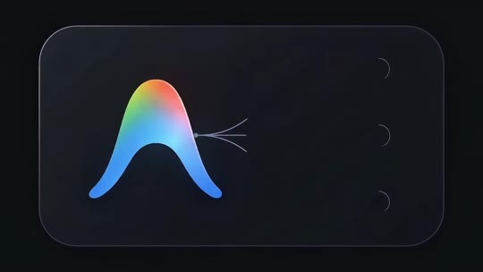
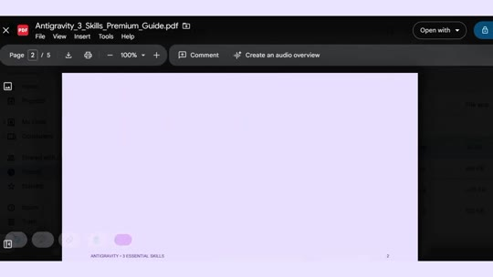
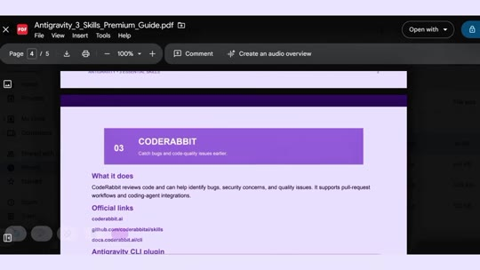

AI · Antigravity-Skills
3 Essential Antigravity Plugins: GSD, Ralph Loop, and CodeRabbit
A breakdown of three high-leverage plugins and skills for Google Antigravity (AGY) coding agents. Combining Get Shit Done (GSD) for structured hierarchical task decomposition, Ralph Loop for autonomous self-directed execution cycles against PRDs, and CodeRabbit for automated pull-request code reviews and security audits dramatically improves complex full-stack web and 3D application delivery.

Plugin Breakdown
- Plugin 1 — Get Shit Done (GSD):
- Function: Deconstructs monolithic, ambiguous prompts into a strict 4-phase execution pipeline: PLAN → BUILD → TEST → LAUNCH.
- Benefit: Prevents agent context drift, eliminates hallucinations across large codebases, and drastically saves token expenditure by isolating discrete subtasks.
- Plugin 2 — Ralph Loop:
- Repository:
github.com/shubhrakant/ralph-loop-for-antigravity - Function: An autonomous agent iteration harness that repeatedly runs an AI agent against a defined task list, backlog, or PRD.
- Persistence: Utilizes project state checkpointing and progress files to maintain context and resolve multi-file bugs across repeated turns without human micro-management.
- Repository:
- Plugin 3 — CodeRabbit:
- Official site / repo:
coderabbit.ai•github.com/coderabbitai/skills - CLI installation:
agy plugin install https://github.com/coderabbitai/skills - Function: Emulates a senior staff engineer reviewing agent-authored code. Flags security vulnerabilities, anti-patterns, edge-case regressions, and missing unit tests directly within git workflows and PRs.
- Official site / repo:
Visual Evidence & Documentation


Verbatim Breakdown
| Timestamp | Screen / Source | Verbatim Content |
|---|---|---|
00:00 |
Spoken (audio) | “Antigravity ke aise 3 plugins jinse tu 3D website design kar sakta hai, aur last wala toh crazy hai.” |
00:06 |
On-screen text | Number 1 • Get Shit Done |
00:07 |
Spoken (audio) | “Ye skill tere ek bade task ko chhote-chhote tasks mein divide kar deti hai. Matlab AI confuse bhi nahi hota aur time bhi save ho jata hai.” |
00:09 |
On-screen cards | BIG TASK → PLAN → BUILD → TEST → LAUNCH |
00:14 |
On-screen text | Number 2 • Ralph Loop |
00:15 |
Spoken (audio) | “Ye ek aisa assistant hai jo next step khud hi decide kar leta hai, aur code issues bhi fix kar deta hai.” |
00:20 |
On-screen text | Number 3 • Code Rabbit |
00:21 |
Spoken (audio) | “Ye ek senior developer ki tarah tera code review karega aur bugs find karega.” |
00:25 |
PDF document text | Antigravity - 3 ESSENTIAL SKILLS 02 • RALPH LOOP Let an agent repeatedly work through defined tasks. What it does: Ralph-style workflows repeatedly run an AI agent against a task list or PRD, using project state and progress files to continue the work between iterations. Antigravity project link: github.com/shubhrakant/ralph-loop-for-antigravity |
00:27 |
PDF document text | What it does: CodeRabbit reviews code and can help identify bugs, security concerns, and quality issues. It supports pull-request workflows and coding agent integrations. Official links: coderabbit.ai github.com/coderabbitai/skills Antigravity CLI plugin: agy plugin install https://github.com/coderabbitai/skills CLI review examples: coderabbit --version coderabbit --agent coderabbit --agent --uncommitted |
(caption) |
Post Caption | Antigravity 3 Plugins For 3d Website Follow @shaheer__build For More Reels [antigravity, antigravity Plugins,3d website,plugins for 3d website,3d website with ai, freelancing, antigravity skills,3d website skills] |
CLI Commands & Installation
- CodeRabbit Plugin Install:
agy plugin install https://github.com/coderabbitai/skills - Run CodeRabbit Review on Uncommitted Changes:
coderabbit --agent --uncommitted - Ralph Loop Repository:
git clone https://github.com/shubhrakant/ralph-loop-for-antigravity.git
Try This
- Install the CodeRabbit skills plugin using the Antigravity CLI (
agy plugin install). - Prior to committing changes on an agentic feature branch, execute
coderabbit --agent --uncommittedto audit diffs for syntax errors, unintended side effects, or security gaps. - When building complex multi-step features, instruct your agent to adopt the GSD protocol (generate a step-by-step checklist file and only transition from BUILD to TEST after validating individual components).
Open Questions
- While the reel title claims these plugins are specifically for “3D websites”, all three tools (GSD, Ralph Loop, CodeRabbit) are general-purpose agentic engineering workflows applicable to any web development, backend, or full-stack software task.